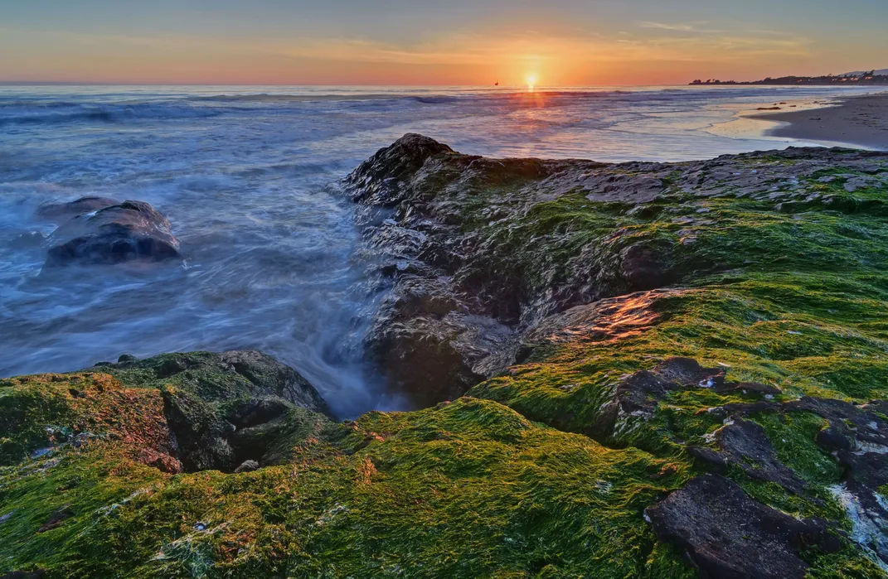
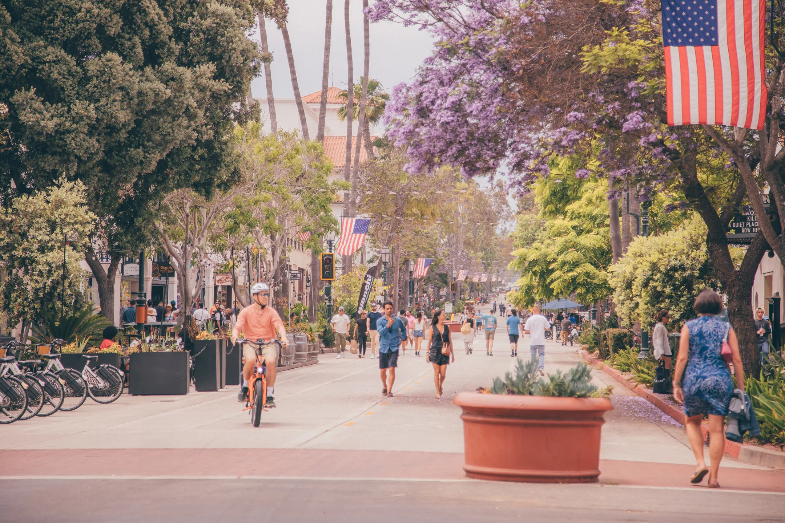
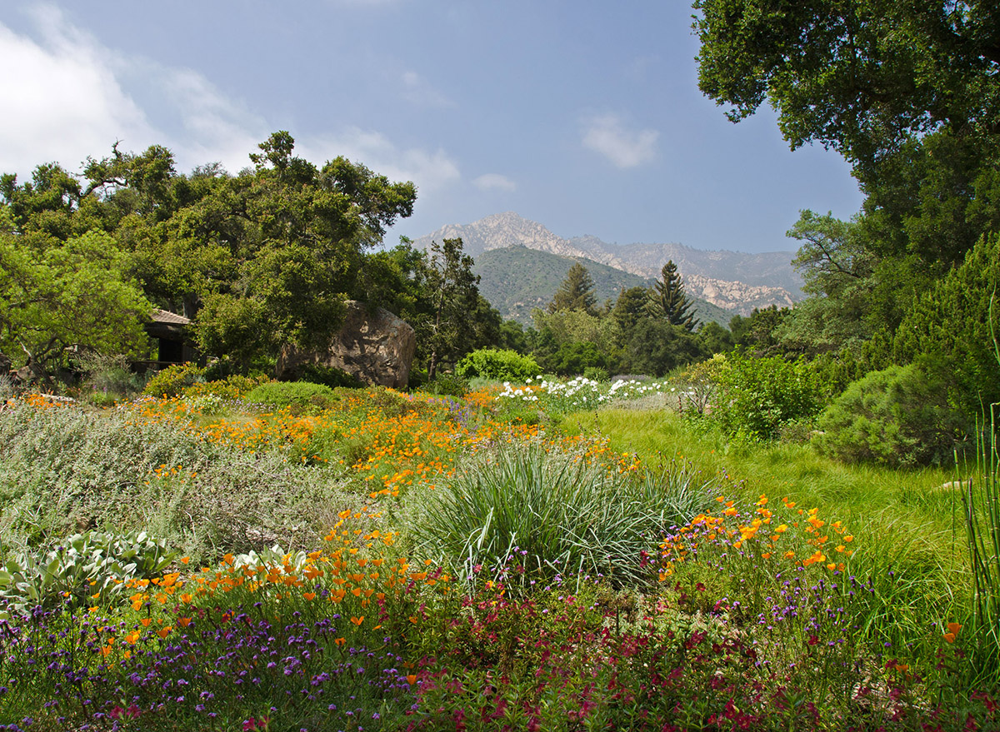
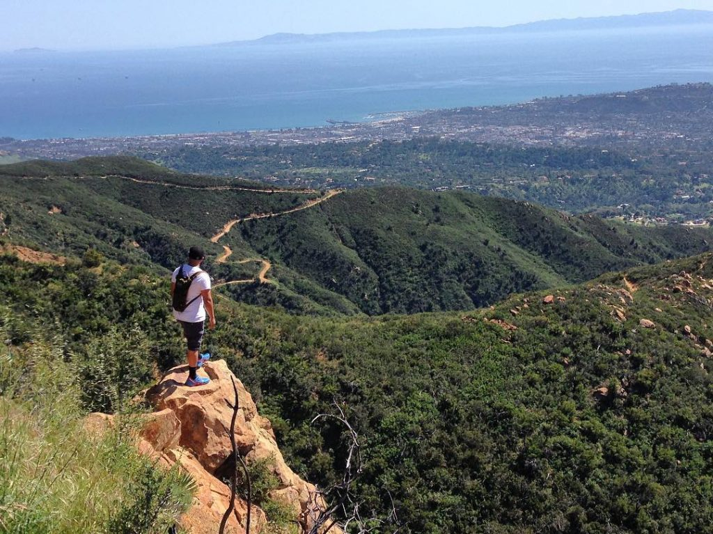
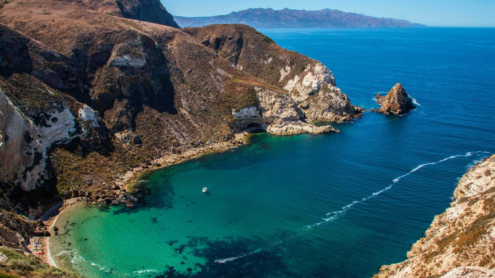
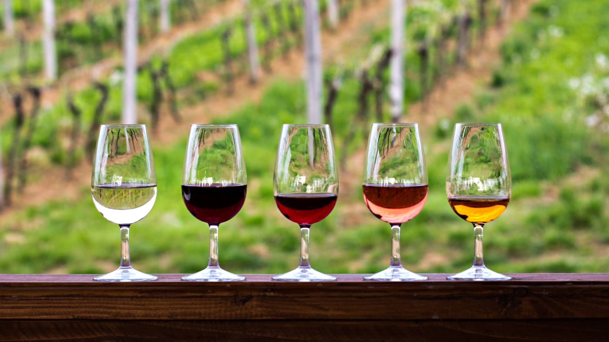

Schedule
The meeting will be held at the Bren School of Environmental Science & Management Lecture Hall.
The full scientific program for COSMOS 2026 will be posted here as the conference approaches. The meeting will run from Monday, 20 July through Friday, 24 July 2026.
Housing
Santa Barbara offers a range of accommodation options to suit different budgets and preferences. We recommend booking early, as July is a popular time to visit the area, and also one of the more expensive times of the year to visit.
A block reservation for 60 people has been made in UCSB campus apartments at a subsidized rate. Booking those rooms will be first come, first served. These are rooms in an apartment complex and are reserved as packages for the full week, either as shared, single, or family accommodation at different rates — please read over the instructions carefully. The more people who request shared or single accommodation, the more people we can accommodate in campus housing as there are limited apartments available. The link to book a room in campus housing in this block is available here:
Some other recommended hotels near the campus of UCSB include:
Note the city of Santa Barbara is about 8 miles / 15 km away from the campus of UCSB, which is closer to the city of Goleta. You are welcome to explore hotels in Santa Barbara as well, but in that case we recommend that you rent a car as ride share trips between Santa Barbara and Goleta can average around $35–50 depending on the time of day.
Accommodation options are marked in blue on the map below.
Local Recommendations
The UCSB campus sits on a bluff above the Pacific Ocean in Goleta, about 8 miles / 15 km west of downtown Santa Barbara.
Getting Here
We recommend flying into the SBA (Santa Barbara) Airport, which is actually within 12 minutes' walking distance of the conference venue. It is a very pleasant and small airport that is quick to get in and out of with historically very few delays. Alternatively, the nearest major hub is Los Angeles airport (LAX), which may provide cheaper options (sometimes, not always!). Getting from LAX to Santa Barbara takes about 90 minutes in no traffic (up to 4 hours in peak LA traffic); you can take a bus from LAX to Santa Barbara/Goleta or rent a car from LAX. Rideshare from LAX is not recommended ($300 one-way). It is often easier to fly to SFO or DEN with a connection into SBA than to fly direct to LAX.
The nearest parking to Bren Hall (conference venue) is UCSB Lot 10, which has coastal access parking on the ground floor. Visit the kiosks in the lot for payment. Alternatively, Lot 18 has additional visitor parking.
Explore the Map
Click the map below to explore local recommendations: important conference venues in purple, accommodation in blue, restaurants/coffee shops in gold, and local sights in green.
Goleta & the UCSB Campus
Beaches & Surfing
The Santa Barbara coastline boasts miles of natural beaches and is home to some of the finest surfing in Southern California. Campus Point Beach, right on the UCSB grounds, is a beautiful spot — great for a morning run or a sunset stroll — and a well-known surf break. Devereux Beach, just west of campus, and the beaches along Isla Vista offer additional surf spots popular with students and locals alike. Nearby Sands Beach and Goleta Beach Park are equally scenic and typically less crowded than beaches closer to downtown.


Coal Oil Point & Ellwood Mesa
Just west of campus, the Coal Oil Point Natural Reserve and the adjacent Ellwood Mesa open space preserve offer a stunning stretch of coastal blufftop habitat. This is one of the most scenic walks in the area — the mesa trails wind through coastal sage scrub above dramatic sea cliffs, with sweeping views of the Channel Islands. Ellwood Mesa is also home to a winter monarch butterfly grove. Coal Oil Point itself is a protected shorebird nesting area and one of the best spots on the coast for wildlife watching.

Dining in Goleta
The Isla Vista neighborhood adjacent to campus has a lively mix of casual eateries and cafés. Old Town Goleta along Hollister Avenue offers good local restaurants and is a short drive from the conference venue.
Santa Barbara

Museums & Culture
Santa Barbara punches well above its size when it comes to museums and cultural institutions. The Santa Barbara Museum of Natural History is one of the finest natural history museums on the West Coast. The Santa Barbara Botanic Garden features over 1,000 native California plant species across 78 acres of scenic canyon and ridgeline — well worth a half-day visit. The Santa Barbara Museum of Art has an impressive permanent collection and a striking downtown building. The Santa Barbara Zoo is a beloved community institution with a gorgeous oceanview setting — great if you are traveling with family.

Hiking in the Santa Ynez Mountains
The mountains rise dramatically right behind Santa Barbara and offer outstanding trails for all abilities, with sweeping views of the coast and the Channel Islands. Highly recommended routes include:

Channel Islands National Park
For a truly spectacular day trip, the Channel Islands National Park is one of the most unspoiled natural areas in California — often called the "Galápagos of North America." The islands host unique endemic wildlife and dramatic sea caves. You catch the boat from Ventura Harbor (about 45 minutes south of Santa Barbara) with Island Packers, the official park concessionaire. Advance booking is strongly recommended in summer.

Dining & Wine in Santa Barbara
State Street and the Funk Zone are the hubs for dining, wine tasting, and nightlife. The Funk Zone in particular is home to a cluster of urban wineries and breweries with a lively atmosphere. The Santa Barbara Public Market on Anacapa Street is a great spot for a casual lunch. The city sits at the heart of the Santa Barbara County wine region — Central Coast wines, especially Pinot Noir and Chardonnay, are well worth exploring.

Registration
Registration and abstract submission will open in April 2026. There will be a modest registration fee to cover some of the cost associated with coffee breaks, lunches, and the conference dinner. Upon registration, you will be asked which days of the meetings you plan on attending, your dietary restrictions, and if you would like a guest to attend the dinner.
For more questions about the meeting please reach out to members of the LOC:
- Caitlin Casey
- Ting-Yi Lu
- Stephanie Urbano Stawinski
- Naomi Carl
- Charlotte Moore